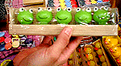
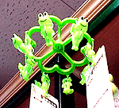

またもカエル蝋燭！長崎に続き六本木で発見！ 【東京発=ちゆり同志記者】私のカエル歴は２０年です。今まで数々のカエルッズを集めて参りました。昔は今ほどのカエルブームなどなく、かえる好きなどは変わり者扱いをされていました。世の中良くなったなぁ〜。六本木の"大中"にて「カエルキャンドル」を発見しました。このカエルキャンドル、５つも入って￥３００。なんと庶民の味方！欲を言うと顔の書き方を丁寧に・・（カエルは顔が命？！）火をつけるのが可哀想で使えそうにありません・・顔が溶けてゆく〜。また先日「府中伊勢丹内フォーリス」にてカエル手袋をゲットしました。
 福岡県飯塚市にカエルハンガー！【福岡発=宮崎兄弟伝読破中様】飯塚市のバスセンター近くで、カエルグッズが異常に充実している店を発見しました。ぱっちり目のカエルがクリップになった、カエル洗濯ハンガーが、とてもお奨めです。横浜ではカエルグッズの宝庫！【横浜発=しらい同志記者】横浜はランドマークタワーの眼下、”Ｑｕｅｅｎ’ｓ Ｓｑｕａｒｅ”２階の「ノアハートクラブ」はカエルグッズの宝庫（特にピアスか充実）だ。カエラーな彼女のプレゼント探しはここしかない。カエルの歌シリーズ続々ラインナップ！【東京発=よぼげ同志記者】カエルMIDIを充実させています。よぼげ同志をカエル奉賛会推薦作曲家と認定！【全国かえる奉賛会】かえるの歌を主題に多様な編曲を生み出す、よぼげ同志を、カエル奉賛会推薦作曲家と認定するぞおおー。みんなも職場で疲れたときなどに、パソコンの音源のボリュームを最大にして、このシリーズを流そう！上司も『おおーカエルの歌かああ。宇宙をかけめぐり、リングに立ったり、新世紀の息吹を感じつつ、水田を思い出すねい！』と、感謝されること確実だ！世界一周カエル再び！？【東京発=kei-f同志記者】平成１０年12月06日号と12月27日号で紹介していた、あの感動的なカエル話が、今日放送予定のスペシャル番組『超アンビリーバブル!!世界仰天ニュース大賞』であの世界一周したカエルのお話が放映されますっっっ!!新聞のテレビ欄のコメントからの情報なので、確実にそう言い切れないのですが…しか し、放映局が先日そのニュースを取り上げた日本テレビということもあり、恐らくそのカエルのお話だと思われます。 【全国かえる奉賛会】あひー、しらなかったぞーっ。誰かビデオにとらなかったかなー 
完売御礼！モロー第２期分譲！【福岡発=モロー寺井同志記者】いつもモローをご贔屓くださりありがとうございます。おかげさまでけろテン市場で販売したモロー第２期分譲も完売しました。ありがとうございました！お手元に届くまでもうすこしお時間をいただくとは思いますがかわいがってやって下さい。とりあえずひとやすみ。おまけの写真はストラップ制作風景。ゴム型に金属を流し込んで冷えたら取り出しみがくのです。投稿採用者に武功カエル徽章を授与！ |
かえる古新聞過去に取り上げた記事を見出し付きで一覧したい人は、ここをクリック◆創刊号を見る◆先週号を見る◆話題の号を見る◆かえる新聞の昔を読む
|
私も入っています。。全国かえる奉賛会
大王様に会うには、このバナーをクリック。ずっと奥に写真館があるぞ。全国かえる奉賛会に入会するには、自分のホームページのどこかに、下の部分を追加するとバナーがリンク付きで表示されるぞ。どんどん入会しましょー |


|
 【全国かえる奉賛会】これは、
【全国かえる奉賛会】これは、